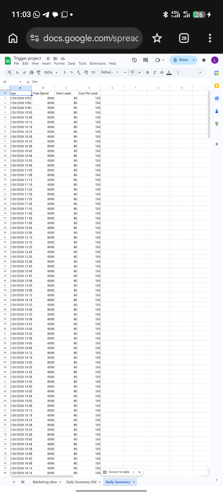
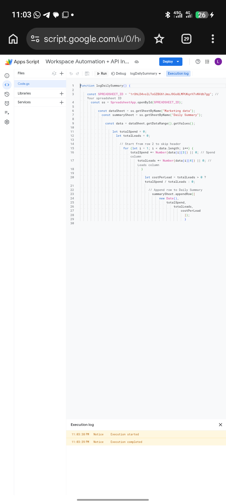
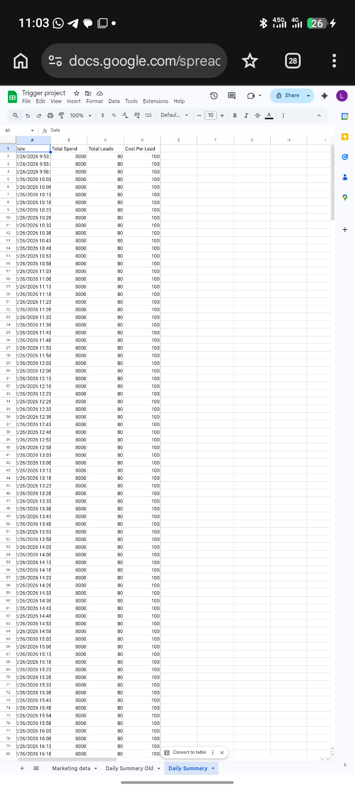
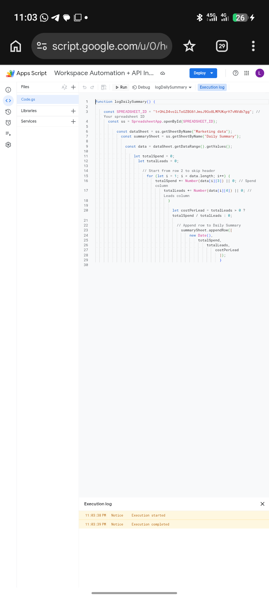

Projects
Automated Daily Marketing KPI Logger
Built a Google Apps Script automation that calculates daily marketing metrics and logs them automatically using time-based triggers.
- Reads Spend and Leads from Marketing Data sheet
- Calculates Total Spend & Total Leads
- Computes Cost Per Lead
- Appends results automatically to Daily Summary
Tools Used: Google Apps Script, Google Sheets, Time-driven Triggers
 


